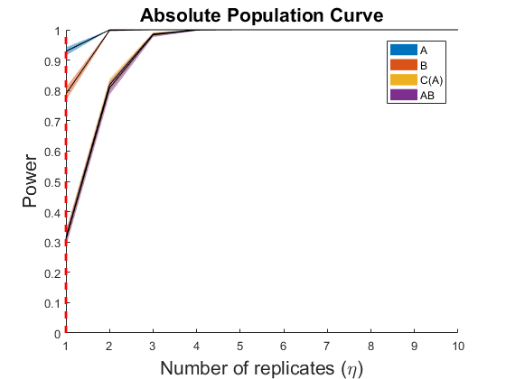
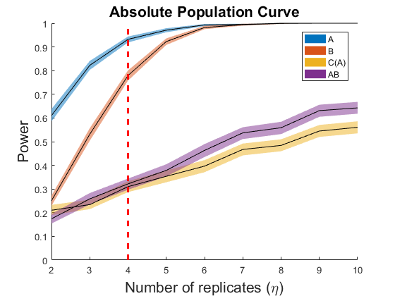
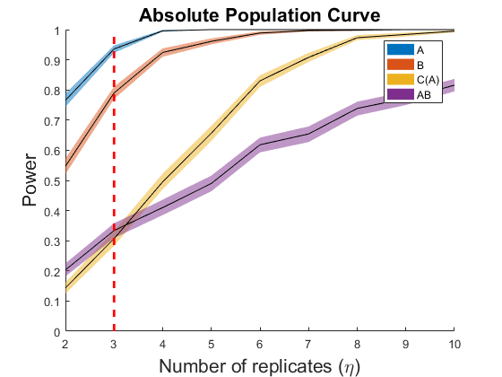
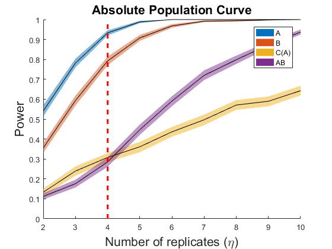

EXAMPLES of Absolute Population Curves in "Population Power Curves in
ASCA with Permutation Testing". Submitted to the Special Issue in honor of Prof. Age Smilde in his retirement.
coded by: Jose Camacho Paez (josecamacho@ugr.es) Michael Sorochan Armstorng (mdarmstr@ugr.es) last modification: 19/Jul/2024
Copyright (C) 2024 University of Granada, Granada
This program is free software: you can redistribute it and/or modify it under the terms of the GNU General Public License as published by the Free Software Foundation, either version 3 of the License, or (at your option) any later version.
This program is distributed in the hope that it will be useful, but WITHOUT ANY WARRANTY; without even the implied warranty of MERCHANTABILITY or FITNESS FOR A PARTICULAR PURPOSE. See the GNU General Public License for more details.
You should have received a copy of the GNU General Public License along with this program. If not, see http://www.gnu.org/licenses/.
Contents
Absolute Population Curves (type 2) from variance coefficients. The design
matrix F contains a full factorial design with four levels for A, three levels for B and four individuals in each cell of C(A). Other inputs are M = 400, kA = kB = kC(A) = kAB = 0.2*theta and kE = 1, theta = 0.5, R = 1000, P = 200, delta = 0.1 and alpha = 0.05. We replicate the whole experiment.
clear close all clc reps = 4; levels = {[1,2,3,4],[1,2,3],1:reps}; F = create_design(levels,1); X.N = size(F,1); X.M = 400; theta = 0.5; X.k = theta*[.2,.2,.2,.2]; rep = 1000; % Power curves [PCmean,PCrep] = powercurve(X, F, {[1 2]},2,rep,[],@()1,1:10,.05,1,200,2,[],[],[],[1 3]); legend('A','B','C(A)','AB') hold on, plot([1 1],[0 1],'--r','LineWidth',2) saveas(gcf,'./Figures/SPC2_0'); saveas(gcf,'./Figures/SPC2_0.eps','epsc'); save ej2_0
Absolute Population Curves (type 2) from variance coefficients. The design
matrix F contains a full factorial design with four levels for A, three levels for B and four individuals in each cell of C(A). Other inputs are M = 400, kA = kB = kC(A) = kAB = 0.2*theta and kE = 1, theta = 0.5, R = 1000, P = 200, delta = 0.1 and alpha = 0.05. We replicate in factor A.
clear close all clc reps = 4; levels = {[1,2,3,4],[1,2,3],1:reps}; F = create_design(levels,1); X.N = size(F,1); X.M = 400; theta = 0.5; X.k = theta*[.2,.2,.2,.2]; rep = 1000; % Power curves [PCmean,PCrep] = powercurve(X, F, {[1 2]},2,rep,[],@()1,2:10,.05,1,200,2,[],[],[],[1 3],1); legend('A','B','C(A)','AB') hold on, plot([4 4],[0 1],'--r','LineWidth',2) saveas(gcf,'./Figures/SPC2_1'); saveas(gcf,'./Figures/SPC2_1.eps','epsc'); save ej2_1
Absolute Population Curves (type 2) from variance coefficients. The design
matrix F contains a full factorial design with four levels for A, three levels for B and four individuals in each cell of C(A). Other inputs are M = 400, kA = kB = kC(A) = kAB = 0.2*theta and kE = 1, theta = 0.5, R = 1000, P = 200, delta = 0.1 and alpha = 0.05. We replicate in factor B.
clear close all clc reps = 4; levels = {[1,2,3,4],[1,2,3],1:reps}; F = create_design(levels,1); X.N = size(F,1); X.M = 400; theta = 0.5; X.k = theta*[.2,.2,.2,.2]; rep = 1000; % Power curves [PCmean,PCrep] = powercurve(X, F, {[1 2]},2,rep,[],@()1,2:10,.05,1,200,2,[],[],[],[1 3],2); legend('A','B','C(A)','AB') hold on, plot([3 3],[0 1],'--r','LineWidth',2) saveas(gcf,'./Figures/SPC2_2'); saveas(gcf,'./Figures/SPC2_2.eps','epsc'); save ej2_2
Absolute Population Curves (type 2) from variance coefficients. The design
matrix F contains a full factorial design with four levels for A, three levels for B and four individuals in each cell of C(A). Other inputs are M = 400, kA = kB = kC(A) = kAB = 0.2*theta and kE = 1, theta = 0.5, R = 1000, P = 200, delta = 0.1 and alpha = 0.05. We replicate in factor C(A).
clear close all clc reps = 4; levels = {[1,2,3,4],[1,2,3],1:reps}; F = create_design(levels,1); X.N = size(F,1); X.M = 400; theta = 0.5; X.k = theta*[.2,.2,.2,.2]; rep = 1000; % Power curves [PCmean,PCrep] = powercurve(X, F, {[1 2]},2,rep,[],@()1,2:10,.05,1,200,2,[],[],[],[1 3],3); legend('A','B','C(A)','AB') hold on, plot([4 4],[0 1],'--r','LineWidth',2) saveas(gcf,'./Figures/SPC2_3'); saveas(gcf,'./Figures/SPC2_3.eps','epsc'); save ej2_3